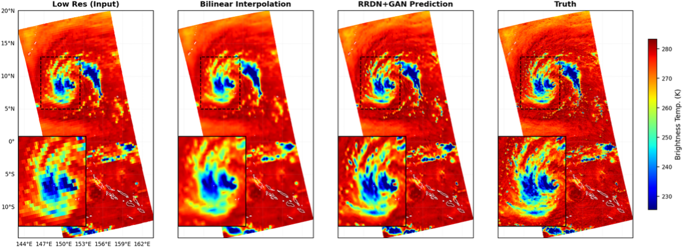
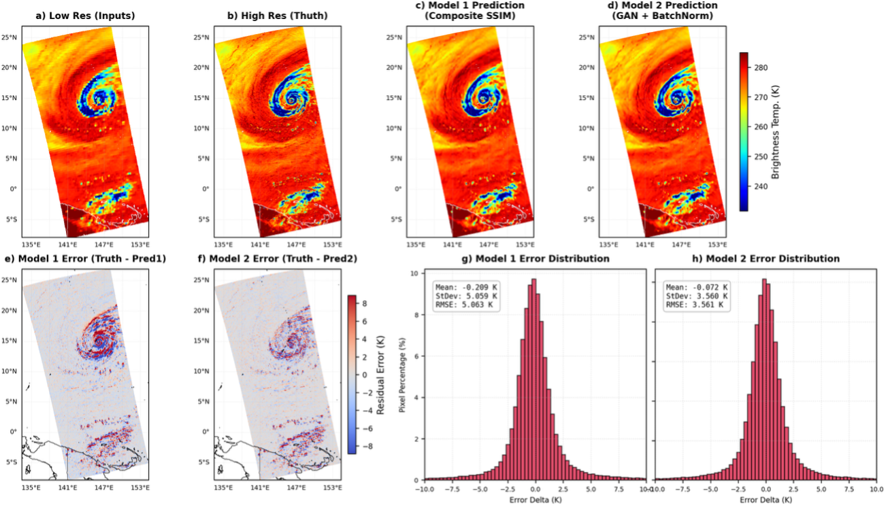
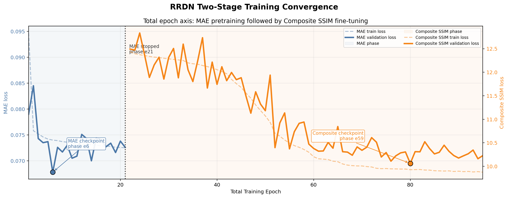
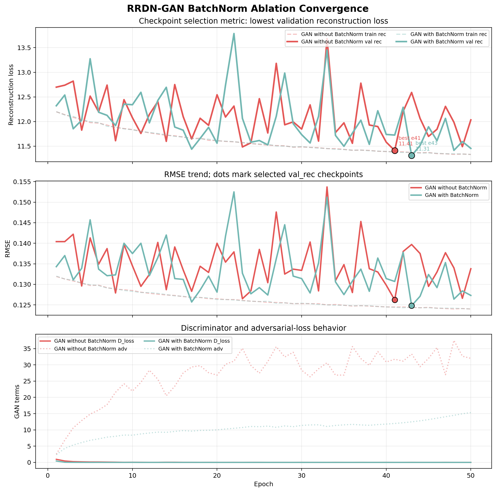
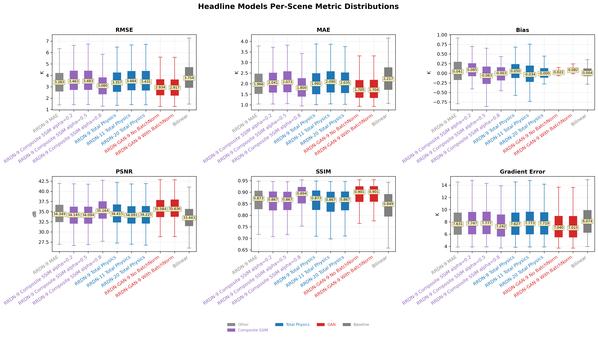
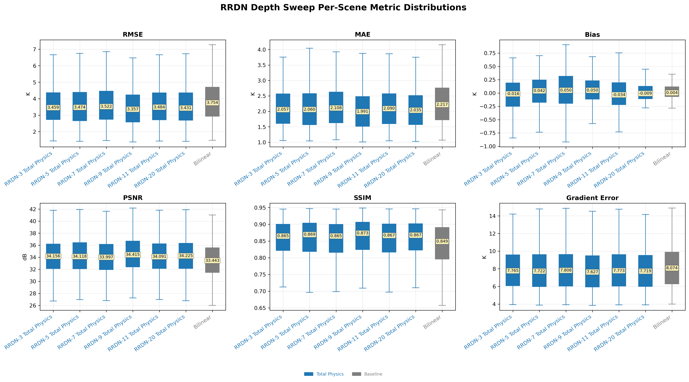
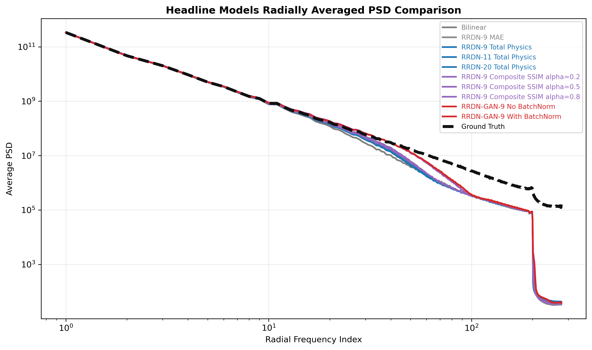
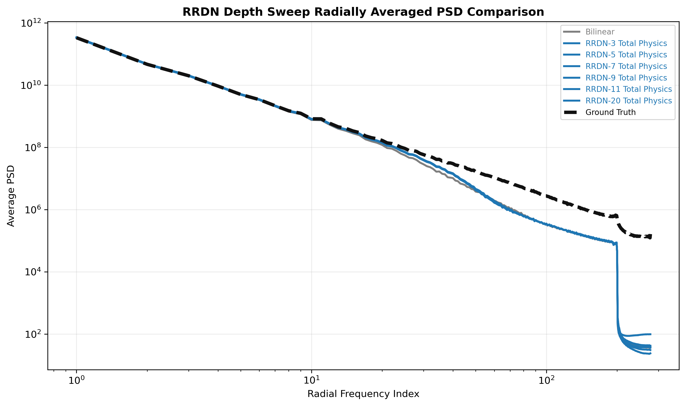
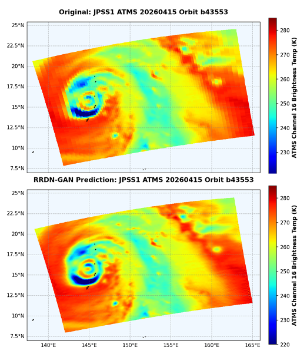
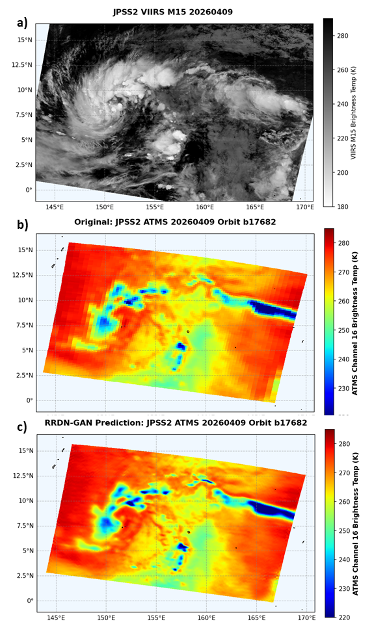

Overview
What this project shows
MW-SR is my strongest end-to-end machine learning project. It combines scientific data handling, model design, GPU training, careful evaluation, and public repository preparation. The goal is not just to make a sharper image, but to improve spatial detail while preserving physically meaningful microwave brightness temperature values.

Project Snapshot
Recruiter summary
Sharper microwave imagery
Microwave observations reveal storm and precipitation structure, but their spatial resolution is limited by sensor footprint and scanning geometry.
End-to-end ML builder
I worked across data preparation, model implementation, training, evaluation scripts, plotting, documentation, and release cleanup.
Reusable research code
The public MW-SR repository includes model loaders, inference scripts, metrics, examples, documentation, and selected downloadable models.
Problem
Why this matters
Visible and infrared imagery can miss precipitation structures hidden beneath clouds. Microwave sensors help reveal those structures, but the images are often coarse or blurry. This project explores whether a single microwave brightness temperature channel can be super-resolved into a sharper field that still respects the original physical measurement.
Approach
What I built
1. HDF5 data pipeline
Prepared paired low-resolution and high-resolution brightness temperature arrays, validated HDF5 structure, and kept large raw data outside Git.
2. Normalized inference path
Used training-set normalization statistics before model prediction and denormalized outputs back to Kelvin before metrics and plots.
3. Model families
Compared residual dense models, residual-in-residual dense generators, composite SSIM objectives, physics-inspired losses, and GAN refinement.
4. Evaluation workflow
Measured RMSE, bias, PSNR, SSIM, latency, residual maps, and spatial-frequency behavior across standard and hurricane-specific validation scenes.
5. Release preparation
Organized a public repository with beginner examples, model-loading utilities, release notes, model artifacts, documentation, tests, and reproducibility guidance.
Architecture Choices
How the model was designed for scientific imagery
Residual learning
RDN and RRDN blocks learn high-frequency corrections instead of reconstructing the full temperature field from scratch.
RRDB trunk
Residual-in-residual dense blocks improve feature reuse and gradient flow while supporting deeper generators.
No generator BatchNorm
Batch Normalization was avoided in the generator to reduce distribution distortion for physical Kelvin-valued data.
Bilinear upsampling
Bilinear upsampling followed by convolutional refinement was used to avoid checkerboard artifacts from learned upsampling.
Composite SSIM
The loss combines pixel fidelity with local structure, contrast, and luminance preservation.
Patch discriminator
GAN fine-tuning used patch-level feedback so storm boundaries and local thermal gradients mattered during training.
Visual Results
Reconstruction and residual behavior
The paired examples make the modeling goal concrete: preserve the broad microwave temperature field while restoring sharper eyewall and rainband organization. The reconstruction and residual figure adds the next layer of evaluation by showing where each model still over- or under-predicts relative to the high-resolution target.

Experiment Evidence
Training behavior and checkpoint selection
The project used staged training. The RRDN generator first learned a stable pixel-wise representation with MAE, then was fine-tuned with a Composite SSIM objective to improve local structure. The GAN experiments then tested whether a patch discriminator could further sharpen local storm features.


Results
What the experiments suggest
The strongest models were the Composite SSIM RRDN and the GAN-refined version. The GAN variant achieved the best overall reconstruction metrics in the current AMSR2 hurricane validation table, while the Composite SSIM model provided a strong non-adversarial baseline.
| Model | RMSE | Bias | SSIM | PSNR |
|---|---|---|---|---|
| Composite SSIM RRDN, alpha=0.8 | 3.3685 | 0.0222 | 0.8991 | 35.2978 |
| RRDN-GAN with BatchNorm | 3.1057 | 0.0733 | 0.9072 | 35.9081 |
The figures below compare two levels of evaluation: controlled architecture/loss sweeps and final headline models. Boxplots show per-scene behavior instead of hiding hard cases inside one average number.


Spatial Frequency Analysis
PSD reveals what scalar metrics can miss
Radially averaged power spectral density compares how much spatial power each model preserves at different frequency ranges. Low frequencies represent broad storm-scale temperature patterns, while higher frequencies correspond to sharper edges, eyewall boundaries, rainbands, and small-scale thermal gradients.


Skills Demonstrated
Engineering signals for ML roles
Deep Learning
TensorFlow/Keras models, RRDN generators, GAN training, loss-function experiments, checkpoint selection.
Data Engineering
HDF5 data handling, normalization, batch inference, file validation, and artifact organization.
Scientific Evaluation
Metric definitions, residual analysis, hurricane case studies, and power spectral density diagnostics.
Reproducibility
CLI scripts, configuration files, tests, README documentation, and separation of large data from source control.
HPC Workflow
GPU training, SLURM-style experiment management, long-running job debugging, and resource-aware inference.
Communication
Technical writing, architecture explanation, recruiter-facing summaries, and figure-driven result interpretation.
Operational Examples
Testing the workflow on storm scenes
MW-SR also includes operational-style storm examples where paired high-resolution truth is not available. These cases are useful for qualitative review: they test whether the released model and plotting workflow can produce meteorologically interpretable outputs on real storm scenes beyond the simulated AMSR2 pairs.


Public Work
Where to review the code
This website is intentionally recruiter-friendly. The MW-SR GitHub repository is the detailed technical artifact: it includes the model code, examples, documentation, release assets, and notes on what belongs in source control versus external storage.
Good first review path
- Start with the repository README.
- Open the beginner guide for model loading and prediction examples.
- Review inference and evaluation scripts for reproducibility.
- Check releases for selected model artifacts.
Repository links
Takeaways
What I learned
- Structural objectives can matter more than simply increasing model depth.
- GAN refinement can sharpen local storm structures, but it must be evaluated against physical consistency metrics.
- Convergence plots, PSD curves, and per-scene boxplots make model behavior easier to audit than one leaderboard score alone.
- For scientific ML, plotting, metadata, normalization, and reproducibility are part of the model workflow, not an afterthought.
- Public release work requires careful handling of large data, model artifacts, documentation, and licensing.